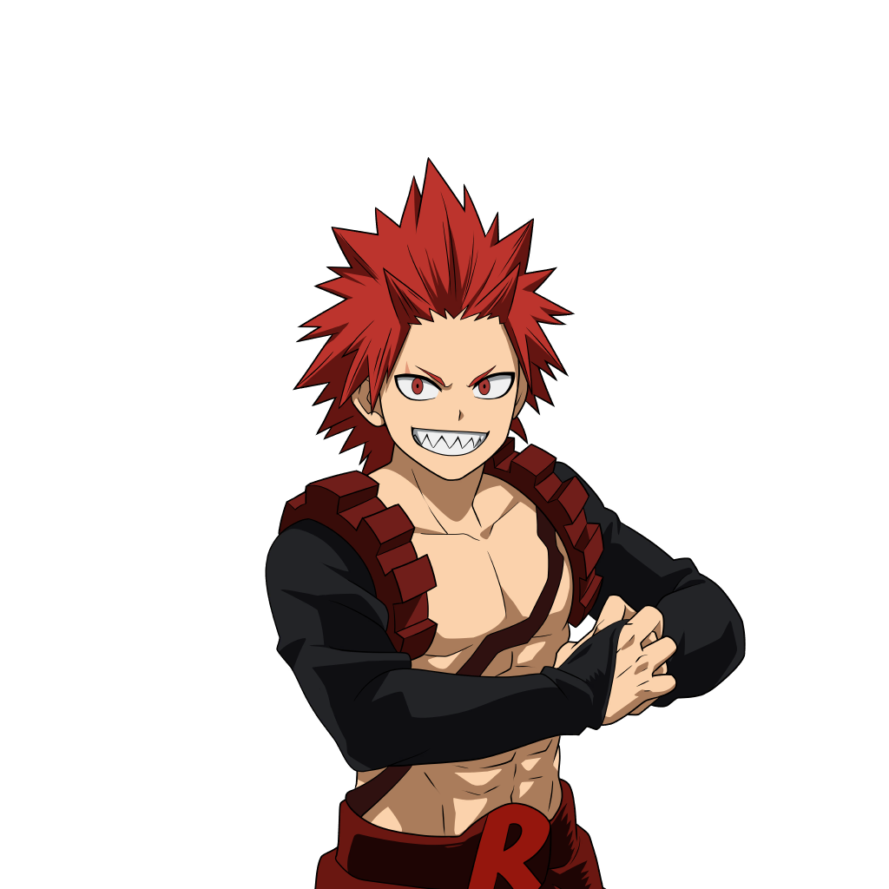

Eijiro Kirishima
Nome de Herói: Red Riot
Individualidade: Hardening – Consegue endurecer e afiar qualquer parte do seu corpo, tornando-se uma armadura humana contra ataques físicos, calor e explosões.
Perfil:
Extremamente enérgico, focado no conceito de "masculinidade" e honra. É um amigo muito leal, sempre disposto a se arriscar para proteger os outros.